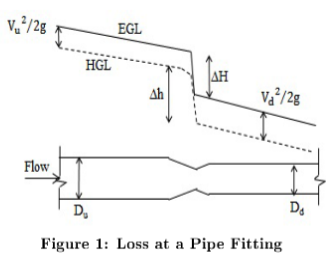
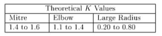
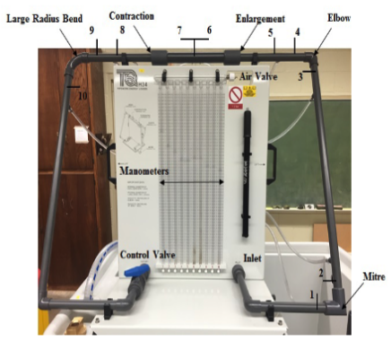

Lab 3 - Friction Losses in Pipes and Fittings#
Course Website
This experiment examines the friction in a narrow diameter tube (pipe).
Readings#
Videos#
Head Loss in Pipes (UT Arlington) Uses a similar apparatus to the TTU set-up
Energy Losses in Pipes - Hydraulics Series by Bogart Alcala Uses a similar apparatus to the TTU set-up
Objective(s)#
Observe flow behavior with varying velocity and Reynolds number; quantify the frictional loss as velocity is changed
The objective of this experiment is to investigate frictional loss with varying velocity and Reynolds number in a pipeline and minor losses in pipe fittings, including bends, sudden expansions, and sudden contractions. Specifically, the experiment aims to:
Measure and compare pressure drops across two locations on a pipeline for varying flow rates
Measure and compare pressure drops across different fittings to determine their respective loss coefficients (KK).
Evaluate the relationship between pressure losses and flow velocity through various fittings.
Develop hands-on experience with data acquisition techniques, including manual flow rate measurements and the use of a Raspberry Pi-based flowmeter.
Explore how geometric factors, such as the ratio of radius of curvature to pipe diameter (R/DR/D) and area changes (AuAu and AdAd), affect loss coefficients.
Validate experimental findings by comparing measured loss coefficients to standard tabulated values reported in the literature.
Encourage critical thinking by requiring:
Justifcation the omission of one fitting pair if using a limited number of pressure transducers.
Analyze the effects of flow regime and measurement uncertainties on experimental results.
Warning
This laboratory experiment uses two different set-ups; one is a small pipeline, the other a small flow loop. The complete laboratory requires measurements on each set-up.
Background#
Modified Bernoulli Equation#
The equation below is the one-dimensional steady flow form of the energy equation typically applied for pressurized conduit hydraulics.
where \(\frac{p}{\rho g}\) is the pressure head at a location, \(\alpha \frac{V^2}{2g}\) is the velocity head at a location, \(z\) is the elevation, \(h_p\) is the added head from a pump, \(h_t\) is the added head extracted by a turbine, and \(h_l\) is the head loss between sections 1 and 2. Fig. 1 is a sketch that illustrates the various components in the energy equation.

Fig. 1 Definition sketch for energy equation#
In pipeline analysis this energy equation is applied to a link that joins two nodes. Pumps and turbines would be treated as separate components (links) and their hydraulic behavior must be supplied using their respective pump/turbine curves.
Flow Regimes#
Laminar flow occurs at low velocities when the particles of waters move in parallel straight lines. The flow is smooth and well-ordered. As the velocity increases, the movement becomes undulating and at some point it breaks into vortices. The flow is turbulent in this case. Reynolds number classifies whether the flow is laminar or turbulent. For a circular pipe, it can be expressed as
It is nearly impossible for turbulent flow to occur at Reynolds number less than 2000 as the turbulence will be restrained by the viscous resistance. However, there is a stage when laminar flow is becoming turbulent or turbulent is becoming laminar. This is transitional flow.
For smooth pipes, the common classifications are:
Laminar Flow: \(Re < 2000\)
Transitional Flow: \(2000 \le Re \le 4000\)
Turbulent Flow: \(Re > 4000\)
For laminar flow, the head loss due to friction is directly proportional to the velocity: \(\frac{\Delta h}{L} \propto v\)
For turbulent flow, the head loss due to friction is proportional to the velocity to a given power, \(n\): \(\frac{\Delta h}{L} \propto v^n\)
The exponent, \(n\) varies between 1.75 and 2.
The flow velocity, \(u\) can be found from the continuity equation when the cross-sectional area of the pipe is known:
Note
Osborne Reynolds, a British physicist and engineer, conducted his famous experiment in 1883 to study the transition between laminar and turbulent flow in pipes. His setup included a glass tube through which water flowed, with a small stream of dye introduced at the inlet. By varying the flow rate, Reynolds observed that:
At low velocities, the dye remained as a smooth, straight line, indicating laminar flow.
At higher velocities, the dye became irregular and dispersed, showing turbulent flow.
Between these two states, he noted a transitional phase.
From his observations, Reynolds formulated a dimensionless number—now known as the Reynolds number (\(Re_D\))—to characterize flow behavior. This number combines fluid properties (density and viscosity), flow velocity, and a characteristic length (such as pipe diameter).
Reynolds’ work established the critical thresholds for flow regimes:
Laminar flow: \(Re<2000\)
Transitional flow: \(2000≤Re≤4000\)
Turbulent flow: \(Re>4000\)
Reynolds’ experiment provided a foundation for understanding fluid dynamics, and the Reynolds number remains a fundamental tool in engineering, used to predict and analyze flow behavior in various systems.
Friction Factors in Fluid Flow (Pipeline Losses)#
Friction factors quantify the resistance to flow in closed (pipes, ducts) and open conduits (sewers, streams, flumes) from internal shear forces and surface roughness. Different models have been developed to describe friction losses under various conditions, with the most notable being the Darcy-Weisbach equation, the Chezy-Manning equation, and the Hazen-Williams equation.
Darcy-Weisbach Equation
The Darcy-Weisbach equation is the most fundamental and widely applicable model for frictional head loss in pipes. It expresses the head loss (\(h_f\)) due to friction as:
Where:
\(f\): Darcy friction factor (dimensionless)
\(L\): Pipe length
\(D\): Pipe diameter
\(V\): Flow velocity
\(g\): Gravitational acceleration
The Darcy friction factor (\(f\)) depends on the Reynolds number (\(Re\)) and the relative roughness (\(k/D\)) of the pipe. For laminar flow (\(Re<2000\)), \(f\) is directly proportional to \(Re^{-1}\). For transitional and turbulent flow (\(Re>2000\)), empirical correlations like the Colebrook-White equation or the Moody chart are used to determine \(f\).
Chezy-Manning Equation
The Chezy-Manning equation is typically used in open channel flow analysis. It relates the flow velocity (\(v\)) to the hydraulic radius (\(R_h\)) and slope of the energy gradient (\(S_f\)):
Where:
\(n\): Manning’s roughness coefficient
\(R_h\): Hydraulic radius (A/PA/P, where AA is the flow area and PP is the wetted perimeter)
\(S_f\): Energy slope (head loss per unit length)
Manning’s \(n\) is an empirical coefficient that accounts for channel roughness, with values typically determined from tabulated data for different materials (e.g., concrete, soil, vegetation).
Note
Rearranged as a head loss equation, Manning’s Equation (SI Units) is
There are some references that relate roughness properties to Manning’s \(n\). (CITE Limneros)
Hazen-Williams Equation
The Hazen-Williams equation is an empirical formula widely used in water distribution systems (common in the USA, and some commonwealth nations). It estimates flow velocity (\(v\)) or discharge (\(Q\)) based on pipe roughness and diameter:
\(v=kCD^{0.63}S^{0.54}\)
Or equivalently: \(Q=kCD^{2.63}S^{0.54}\)
Where:
\(C\): Hazen-Williams roughness coefficient
\(k\): Unit conversion constant
\(D\): Pipe diameter
\(S\): Hydraulic slope
The Hazen-Williams coefficient (\(C\)) is specific to pipe material and condition, with higher values indicating smoother pipes. Unlike the Darcy-Weisbach equation, this formula is limited to turbulent flow in water systems and assumes a fixed dependency on flow conditions.
Comparing the Models
Darcy-Weisbach: The most theoretically consistent with fluid mechanics. It is versatile, applicable to all fluids, flow regimes, and pipe conditions. Requires iterative solutions in turbulent flow due to its dependence on \(Re\) and \(k/D\).
Chezy-Manning: Ideal for open channel flows. It simplifies calculations by focusing on geometric and material properties but lacks general applicability to pressurized flows.
Hazen-Williams: Convenient for design purposes in water supply systems but is inaccurate for extreme conditions or non-water fluids.
Practical Applications
Darcy-Weisbach: Pipe design in chemical, mechanical, and civil engineering.
Chezy-Manning: Hydraulic analysis of natural streams, irrigation channels, and culverts.
Hazen-Williams: Urban water distribution networks and large pipelines.
The friction factor in the laboratory will be determined using the Darcy-Weisbach model where, \(f\) can be found as:
The necessary physical water properties corresponding to water temperature should be used. They can be found in tables such as http://54.243.252.9/toolbox/fluidmechanics/WaterPropertiesUS/WaterPropertiesUS.html, or from any fluid mechanics textbook.
Fig. 2 is a photograph of the experimental setup
{kind=link}
Fig. 2 Photograph of Laboratory Set-Up (for Low-Flow Measurements)#
Laboratory Setup (Pipeline Losses)#
The experimental setup (pictured above) includes:
Hydraulic bench connected to a header tank and test pipe.
A hand-held pressure meter for measurements.
Equipment for flow rate adjustments and air bleeding.
Note
The discharges are usually below the stall speed of the mass flow meter, so your flow measuring tool for the apparatus is “time-to-fill” technique.
Friction Losses in Fittings (Minor Losses)#
Pipe networks have numerous fittings: mitre bends, elbow bends, large radius bends, sudden expansions and sudden contractions. There are losses due to these fittings which are known as fitting or minor losses which cause noticable pressure drops. Pressure loss across a fitting is the difference between the pressure at the upstream and downstream of that fitting.
Expansions and Contractions#
In a sudden expansion, the flow splits when it is entering the bigger diameter pipe from the smaller diameter pipe. Head is lost due to the diffusion and eddies in the corners. In sudden contraction, flow area is contracted which is known as vena contracta because of the jet formation. Head loss is due to vortices and eddies. Figure 1 illustrates loss at a pipe fitting:

For the fitting above, the total head loss:
The loss coefficient K is defined as
or
Usually the velocity associated with the smaller diameter part of the fitting is used.
In this experiment, the mitre and elbow have constant pipe diameters. Therefore, \(V_u\) and \(V_d\) are the same.
For the sudden enlargement, the upstream velocity is used to express the velocity head. For the sudden contraction, the downstream velocity characterizes the velocity head.
Bends#
When liquid is flowing through a \(90^o\) bend, depending on the ratio of radius of curvature to diameter of the pipe (\(\frac{R}{D}\)), amount of loss differs. Smaller loss is associated with easier flow path and lower the minor loss coefficient, K value is. Following table summarizes the typical K values for different bends

Loss Model Structure#
The loss model(s) are usually of the structure
where the velocity is taken as the larger value in the case of a diameter change.
The \(K\) values are determined from
Bend#
Expansion#
The \(K\) value can be approximated from
Contraction#
The \(K\) value can be approximated from
Laboratory Setup (Fitting Losses)#

The figure depicts the experimental apparatus used. The operational procedure is:
Close the exit valve on the left side of the flow circuit, and then turn on the water source
Slowly open the exit valve on the apparatus, and watch the water levels in the manometer tubes
Determine the flow rate of the liquid by measuring the time it takes to fill a known volume, and using the homebrew flowmeter (Raspberry Pi)
Record the differential pressure readings across each of the fittings
Repeat step 3 and 4 to obtain data for at least five different flow rates by adjusting the exit valve
Note
Flow rate can be measured using the mass flow meter; each setting should be checked using time-to-fill method to validate the readings from the datalogger.
If pressure transducers and datalogger are functional you will use that tool to determine the pressure differences across each fitting. With only 8 input channels one fitting pair will be omitted - study the apparatus and determine and justify which pair can be omitted and still obtain adequate information.
Laboratory Objectives#
Observe how flow behavior changes with velocity and Reynolds number.
Measure the variation in frictional loss with changing velocity.
Develop continued experience with automated data aquisition, by using the flowmeter calibrated in a prior laboratory (you will need the correct meter constant you determined in the prior lab exercise)
Employ electronic pressure transducers using a similar end-user programmed automated data logger (you will find the voltage to pressure conversion constant as part of this lab)
Develop an experimental protocol (step-by-step instructions) to measure flow (two methods), pressure drop (two methods), and head loss (computed), and Reynolds’ number (computed).
Conduct a set of experiments in triplicate to measure measure flow, and pressure drop.
Document the experiment(s) into a laboratory report and address the following in the report:
Compare the flow rate using stopwatch and bucketto the flowmeter (Raspberry Pi); are the low flows even measurable with the flowmeter?
Compare the pressure drop using the manometers and calculator, the handheld pressure instrument, and the automated datalogger system. Using the manometer and hand-held as “ground-truth” determine the multiplier on the output voltages from the datalogger required to convert these readings into a pressure. Do the transducers appear to be linear?
Experiments are conducted in triplicate, so you can compute mean values and standard deviations; what does this information tell us about the accuracy of the measurements?, What does it tell us about the repeatability of the measurements?
Do the automated methods (because of high sampling rate) provide a benefit in terms of mean and variance?
What are some potential sources of errors in your lab experiments.
Warning
The protocol is evaluated to ensure that the envisioned procedures can be safely conducted under appropriate supervision. The experiments may produce incomplete results if steps are ommitted.
Deliverables#
Laboratory Report documenting the actual experiments, and other required content including comparison to tabulated values.